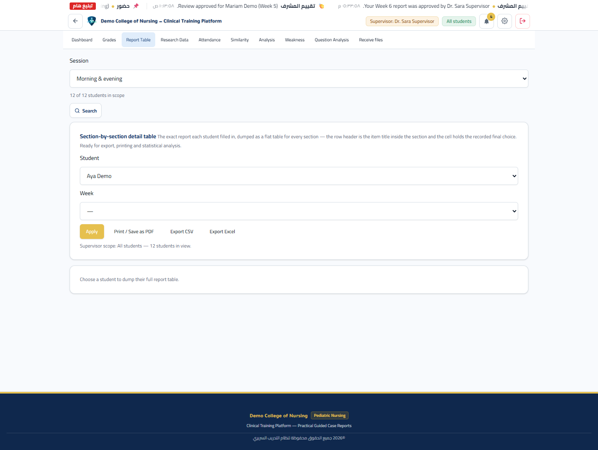
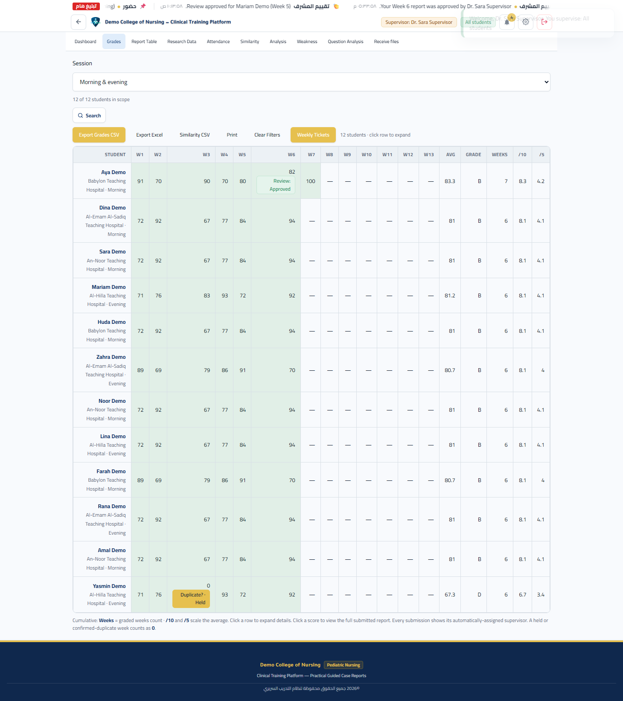
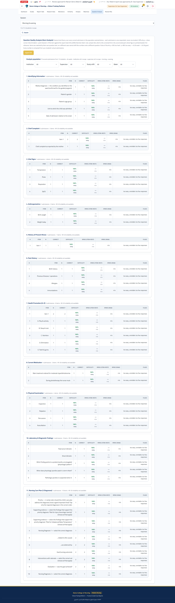
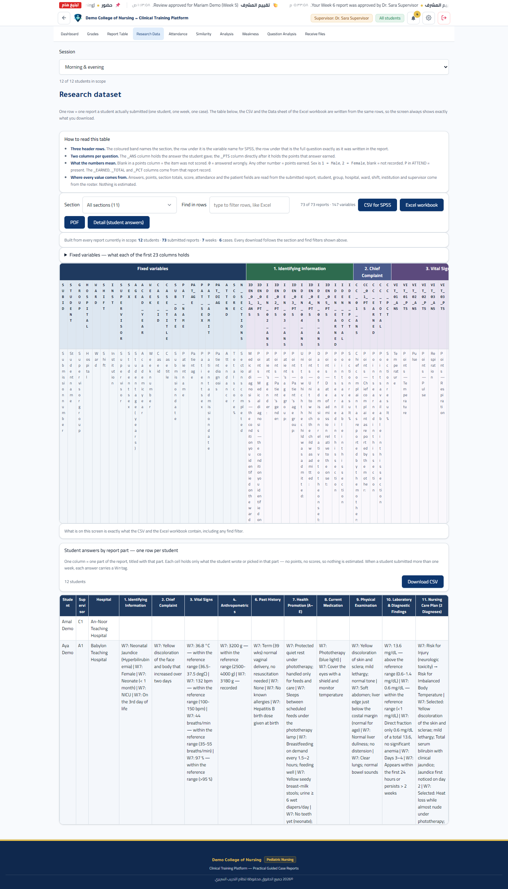
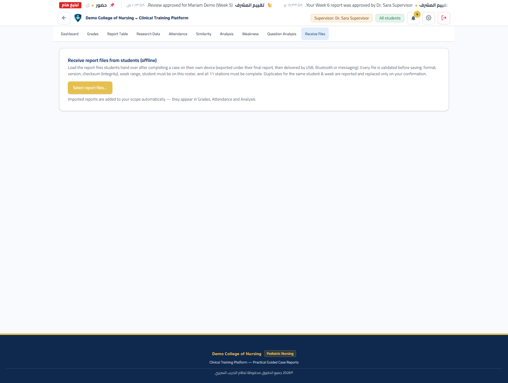

كيف تُدير تقارير طلابك على المنصة
مسار عملي من تسليم الطالب إلى قرار المشرف: الإسناد التلقائي، ثم تسع نوافذ إشرافية، وقراءة الأرقام، ومراجعة كل تقرير، وصولًا إلى كشف التشابه. كل نافذة مع صورة حقيقية وشرح لما تفعله وكيف تستجيب.
1. دورك على المنصة
الطالب يكتب التقرير، والمنصة تحسب الدرجة، ودورك أن تراجع وتقرّر.
بعد أن يسلّم الطالب تقرير حالته الأسبوعي (أحد عشر قسمًا بصيغة «Pediatric Daily Clinical Report»)، يُسند التقرير تلقائيًّا إلى المشرف المسؤول عن نطاقه. تفتح لك المنصة واجهة إشرافية واحدة تجمع بيانات طلابك: الدرجات، الحضور، التحليل، الضعف، تحليل الأسئلة، بيانات البحث، ومراجعة كل تقرير على حدة، ثم كشف التشابه بين التقارير.
تقييم موحّد
درجة تلقائية موزّعة بالأوزان لكل طالب في كل أسبوع، ودرجة نهائية قابلة للتعديل عند الحاجة.
متابعة حيّة
لوحة تحكم ورسوم تلخّص التسليم والحضور ومستوى الأداء على مستوى نطاقك.
قرار موثّق
لكل تقرير مراجعة (معتمدة / تحت المراجعة / تحتاج تعديلًا) وملاحظة تصل للطالب.
حماية الأصالة
كشف تشابه آلي بين تقارير الطلاب ويعرض «قيد الفحص — الدرجة موقوفة» حتى تقرر.
2. النطاق والإسناد
قبل أي نافذة، افهم من هم طلابك؛ فكل النوافذ تُبنى على نطاقك أنت.
لكل مشرف نطاق (scope) يحدّده مسؤول المنصة، وقد يتكوّن من أي مزيج من: المجموعات، والمستشفيات، والورديّة، والمؤسسة. ونطاق المشرف يُقيّد كل ما تراه:
- لوحة التحكم والجداول: تعرض طلاب نطاقك فقط.
- الإسناد: عند تسليم الطالب يُسند التقرير تلقائيًّا إلى مشرفه عبر منطق النظام.
- بيانات البحث والتحليل: تُحسب فوق تقارير طلابك فقط.
ما تراه في شريط التنقّل
قائمة المشرف تسع نوافذ: Dashboard، وGrades، وReport Table، وAttendance، وSimilarity، وAnalysis، وWeakness، وQuestion Analysis، وReceive files. ولا يظهر لك «Admin Hub» ولا «Backup / Restore» لأنهما محصوران بمسؤول المنصة.
3. لوحة التحكم (Dashboard)
نقطة البداية: صورة سريعة عن عدد الطلاب والتقارير وحالة المزامنة.

ماذا تقرأ فيها
اسم المشرف الظاهر في كل نافذة، ومنتقي «كل الطلاب / الطلاب في نطاقي».
«Central sync: not configured» تعني أن المزامنة السحابية غير مفعّلة، والبيانات محليّة على الجهاز.
Outbox: عدد التسليمات التي تنتظر المزامنة (كلها / معلّقة / متزامنة).
4. جدول التقارير (Report Table)
النافذة الجوهرية: كل تقرير لكل قسم، حقلًا بحقل.

يعرض الجدول ما كتبه كل طالب فعليًّا في كل قسم، والنقاط التي نالها مقابل كل بند. استخدمه عندما تريد التحقّق من جواب بعينه قبل قرار المراجعة.
5. الدرجات (Grades)
كيف تتحوّل إجابات الطالب إلى درجة من 100 ورمز حرفي.

كيف تُحسب الدرجة
لكل قسم وزن من مئة، ودرجته النهائية تُحسب من نسبة النقاط المكتسبة داخل القسم مضروبة في وزنه، ثم تُجمع الأقسام:
| القسم | الوزن |
|---|---|
| التعريفية (ident) | 8 |
| الشكوى الرئيسية (cc) | 5 |
| العلامات الحيوية (vit) | 12 |
| القياسات (anth) | 8 |
| تاريخ المرض الحالي (hpi) | 10 |
| التشخيص التمهيدي (promo) | 8 |
| القسم | الوزن |
|---|---|
| التاريخ المرضي (hist) | 5 |
| الأدوية (meds) | 8 |
| الفحص السريري (pe) | 14 |
| التحاليل (labs) | 10 |
| خطة الرعاية (ncp) | 12 |
| المجموع | 100 |
معادلة الدرجة: weightedScore تجمع لكل قسم weight × (earned / total). الرمز الحرفي يأتي من الدرجة النهائية وفق السلّم:
| الدرجة | المدى | الرمز | الوصف |
|---|---|---|---|
| 90 وما فوق | 90–100 | A | Excellent |
| 80 – 89 | 80–89 | B | Very Good |
| 70 – 79 | 70–79 | C | Good |
| 60 – 69 | 60–69 | D | Acceptable |
| 50 – 59 | 50–59 | E | Weak |
| أقل من 50 | <50 | F | Fail |
الدرجة مقابل «المهارات العملية»
توجد في نافذة المراجعة بطاقة «Official practical marks» تفصل المهارات العملية:
- التقييم السريري المستمر /40
- الاختبار العملي الداخلي /20
- المجموع = 60 نقطة
مع اقتراح تلقائي للحقل الأول من درجة المنصة (الدرجة × 0.4).
6. الحضور (Attendance)
جدول الحضور لكل أسبوع، وقواعد الإنذار، ودرجة الحضور من 5.

رموز الحضور
| الرمز | المعنى |
|---|---|
| P | حاضر (Present) |
| X | غائب (Absent) |
| E | غائب بعذر (Excused) |
حالة المتابعة (تحسب تلقائيًّا)
| عدد الغيابات | الحالة |
|---|---|
| صفر | Satisfactory |
| غياب واحد | Monitoring |
| غيابان | First warning |
| ثلاثة فأكثر | Final warning |
احتساب العلامة
لكل محاضرة متتبَّعة 5 نقاط: حضور = 5، إذن بعُذر = 2.5، غياب = 0. ويُحسب الحضور للورديّة المسؤولة عن الطالب (صباحي/مسائي).
7. التحليل (Analysis)
صورة سريعة لأداء نطاقك مقابل الأقسام، بقراءة صحيحة للأرقام.

تعرض النافذة متوسط كل قسم، ونطاق مستواه (خبرة/إنجاز/تطوير)، لتعرف أين يقف نطاقك بسرعة قبل الغوص في التقارير الفردية.
8. نافذة الضعف (Weakness)
لوحة الأقسام الضعيفة باللون: أحمر ضعيف، كهرماني يحتاج عملًا، أخضر متين.

كيف تقرأها
- اختر مشرفًا أو طالبًا واحدًا ثم اضغط «Show».
- الألوان: أقل من 50% ضعيف، 50–69% يحتاج عملًا، 70% فأكثر متين.
9. تحليل الأسئلة (Question Analysis)
جودة بنود التقرير: أي الأسئلة صعبة، وأيّها لا تميّز بين الطلاب.

تُحتسب الإحصاءات على بنود الأسئلة المطابقة في الأقسام المقفلة ذات الدرجة الرقمية، وتُعرض فقط للبنود التي بلغت الحد الأدنى من الاستجابات (5 استجابات). استخدمها لمعرفة البنود التي يخطئ فيها الجميع، أو التي لا تفرّق بين المتمكّن وغيره.
10. بيانات البحث (Research Data)
كل صف = تقرير واحد سلّمه طالب فعليًّا. ما تراه على الشاشة هو نفسه ما تُنزّله.

كيف تقرأ الجدول
- ثلاثة صفوف ترويسة: الشريط الملوّن يسمّي القسم، ثم اسم المتغيّر، ثم نص السؤال كما كتبه النظام.
- عمودان لكل سؤال:
_ANSجواب الطالب، و_PTSالنقاط التي نالها. - دلالة الأرقام: فراغ في عمود النقاط = بند غير مُقيَّم، و
0= خطأ، وأي رقم آخر = النقاط المحصَّلة. الجنس 1 = ذكر و2 = أنثى، وPفي ATTEND تعني حاضرًا.
11. استقبال الملفات (Receive files)
مسار التسليم دون اتصال: الطالب يُصدّر ملف تقريره، والمشرف يستقبله.
عندما يُنفّذ الطالب حالته على جهازه الخاص، يُصدّر ملف تقريره (به بصمة تحقّق checksum)، ثم يُسلّمه إليك عبر USB أو Bluetooth أو رسالة. عبر نافذة الاستقبال يتم فحص كل ملف قبل حفظه: الصيغة، والإصدار، والبصمة، ونطاق الأسبوع، وأن يكون الطالب في القائمة، واكتمال الأقسام الأحد عشر.


12. مراجعة تقرير (Review Report)
من هنا تُصدر قرارك على تقرير واحد: مراجعة، وعلامات عملية، وإجراءات.

عناصر النافذة
اسم الطالب، الأسبوع، الدرجة من 100، والمشرف المسند إليه التقرير.
صيغة «Pediatric Daily Clinical Report» كما كتبها الطالب، مع «Full details table» لعرض Excel.
حالة المراجعة + ملاحظة قصيرة تظهر للطالب في صفحته وتقريره.
حقل «Ongoing /40» و«Internal exam /20» مع اقتراح تلقائي للحقل الأول.
قرار المراجعة
| الاختيار | المعنى |
|---|---|
| Under review | قيد المراجعة — الحالة الافتراضية حتى تقرّر. |
| Approved | معتمد — قبلت التقرير كما هو. |
| Needs revision | يحتاج تعديلًا — مع ملاحظتك الموجَّهة للطالب. |
ماذا يفعل كل زر إجرائي؟
- Save review: يحفظ حالة المراجعة والملاحظة للطالب.
- Save practical marks: يحفظ العلامات العملية (المستمر/40 والامتحان/20).
- Reassign final score: يعدّل الدرجة النهائية (0–100) عند الحاجة.
- Unlock for redo: يزيل قفل التسليم ليُعيد الطالب المحاولة.
- Delete: يحذف تسليم الأسبوع للطالب.
13. كشف التشابه (Similarity)
مقارنة النصوص الحرّة بين تقارير الطلاب، بالعربية وبمقياس Bigram-Jaccard.

تُقارَن النصوص الحرّة (بين الجدول والمصفوفة) عبر تشابه النصّ الحرّ في كل قسم، ثم يُدمج مع تشابه الأقسام. الفحص يعمل في عامل ويب (Web Worker) بالعربية، فتبقى الواجهة متجاوبة.
العتبات
| المقياس | القيمة |
|---|---|
| تشابه النص الحرّ (تحذير) | 70% |
| تشابه الأقسام (تحذير) | 60% |
| المؤشّر المركّب (تحذير) | 55% |
| النص الحرّ (متوسط) | 45% |
| حد الفحص للنص الحرّ | 35% |
| حد الفحص للمؤشّر المركّب | 45% |
يظهر الزوج في اللوحة إذا بلغ النص الحرّ scanFree = 35% أو المؤشّر المركّب scanCombo = 45%. ويُحسب المؤشّر المركّب: free × 0.6 + sections × 0.4.
قرار التشابه
- يفحص النظام كل الأزواج (عبر الأسابيع، بين الطلاب وداخلهم).
- يُدرج الأزواج التي تجاوزت حدّ الفحص، مرتّبةً بالأعلى تشابهًا.
- لكل زوج حالة: «Duplicate check pending — the grade is held» أي أن الدرجة موقوفة ريثما تقرّر.
- تفتح «Compare / decide» لترى التقريرين جنبًا إلى جنب.
- قرارك: «Confirm duplication → 0» يصفّر الدرجة، أو «Not a match → restore» يعيدها.
14. مسائل معروفة
مسألتان حقيقيتان في البناء الحالي، موثّقتان كما هما دون تغيير في المنصة.
العَرَض: عند اختيار «Supervisor — all in scope» تعرض لوحة الضعف نسبًا مضخَّمة للأقسام (تتجاوز 100%).
السبب: دالة التجميع تجمع النقاط المحصَّلة عبر كل تقارير الطالب، بينما تُضيف وزن القسم مرة واحدة فقط لكل طالب، فيخرج الناتج أكبر من الحقيقة.
ما نوصي به: اعتمد على عرض الطالب الواحد في نافذة الضعف (القسم 8)، وعلى نافذة التحليل (القسم 7) التي تحسب المتوسطات بشكل صحيح. الوضع العام للوحة الضعف غير موثوق حتى يُصلح.
العَرَض: يظهر «Receive files» في قائمة المشرف، لكن الضغط عليه يعرض «You are not allowed to open this section».
السبب: خريطة الصلاحيات لا تتضمّن الصلاحية المطلوبة، مع أن قائمة التنقّل تُدرجه للمشرف.
ما نوصي به: نفّذ استقبال الملفات من حساب مسؤول المنصة (المدير) الذي يملك صلاحية الوصول، أو أصلح الخريطة في نسخة المنصة إن أردت أن يستقبله المشرف مباشرة.
15. أسئلة شائعة
تلقائيًّا وفق نطاقك (المجموعة/المستشفى/الوردية). لا حاجة لأي إجراء يدوي.
التصميم متعمد: لا تُعرض النقاط داخل القسم؛ تُجمع كلها في التقرير النهائي. غاية القفل التثبيت والتعلّم من التغذية الراجعة.
«التحليل» تحسب المتوسطات بشكل صحيح على مستوى الطالب. «نافذة الضعف» في وضع «كل الطلاب» تعطي أرقامًا مضخَّمة (غير موثوقة). استخدم التحليل للمقارنة، ونافذة الضعف لطالب واحد فقط.
النظام رصد تشابهًا مشبوهًا. الدرجة مجمّدة (تظهر 0) إلى أن تفتح «Compare / decide» وتقرّر: تأكيد (صفر) أو نفي (إعادة الدرجة).
نعم، من نافذة المراجعة زر «Reassign final score» يتيح تعديل الدرجة (0–100) مع تدوين السبب في سجل التدقيق.
المزامنة السحابية غير مفعّلة. البيانات محليّة على الجهاز. هذا لا يمنع العمل؛ المزامنة اختيارية للنسخ الاحتياطي عبر الأجهزة.
16. اختبر نفسك
خمسة أسئلة فحص سريع لمهام المشرف. اختر إجابة لتعرف صحّتها فورًا.
1) كيف يصل تقرير الطالب إلى المشرف؟
2) أي نافذة تعطي متوسطات الأقسام الصحيحة للمقارنة؟
3) عند أي عدد غيابات يُعطى «Final warning»؟
4) على ماذا تُحتسب إحصاءات نافذة تحليل الأسئلة؟
5) ماذا تعرض لوحة كشف التشابه عند رصد زوج متشابه؟